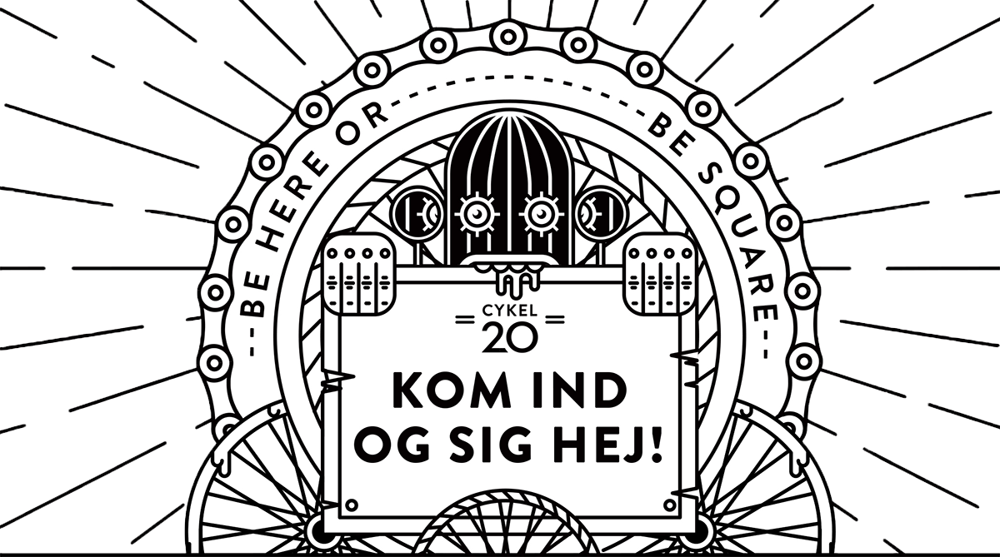
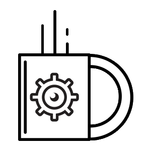
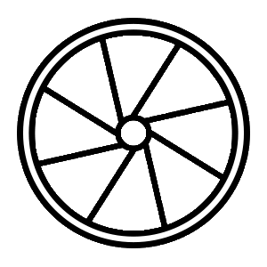
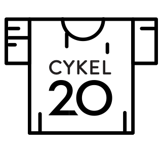
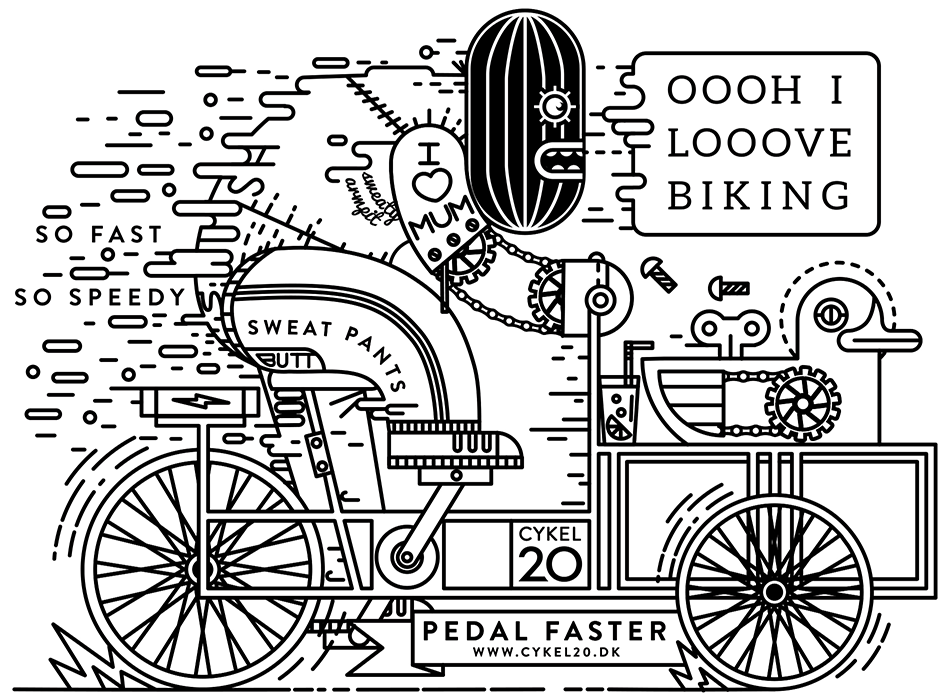
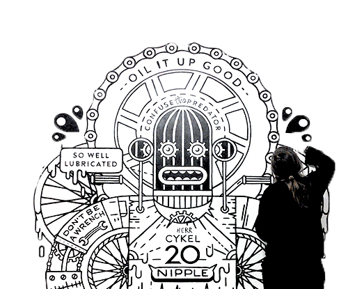

Om Cykel20
Cykel20 er en butik og et socialt projekt, samt danner rammen for et fælleskab omkring cykler og cykel upcycling. I Cykel20 sælger vi blandt andet stjålne cykler (bare rolig – vi stjæler dem ikke selv, men skaffer dem på lovlig vi gennem forsikringsselskaber mm.), cykel upcycling (kreative ting lavet af cykelskrot mm.) samt andre designting, hvor vi har fokus på bæredygtighed og støtte til sociale projekter. Alt overskud fra butikken går til Den Sociale Café Hjerterummet – et værested for mennesker med psykiske, sociale, alkohol – eller sundhedsmæssige problemer.
Kaffe på kanden
Hos os er selv kaffen “varm”. Kig ind og få en kop med, vi har altid en kanden klar. Det er ganske gratis, men du er naturligvis velkommen til at spytte i kassen, hvis du vil støtte en go’ sag.

Re-cyckler
Re-cykel ApS er en socialøkonomisk virksomhed, der erhverver sig cykler fra forskellige forsikringsselskaber. Cyklerne efterses og laves i stand af en faguddannet cykelmekaniker.

Hr. Cykel20 design
Hvid du, ligesom os, slet ikke kan få nok af Hr. Cykel20, så kom ind og se vores hotte T-shirts by Kärt Koosapoeg.

Støt Cykel20
Cykel20 er et socialt projekt, hvor alt overskud går til Den sociale Café Hjerterummet. Projektet er udelukkende baseret på frivillighed

Blog

februar 9, 2016 /
Den stolte mor af Herr Cykel
Mange kan bemærke sort og hvid weirdo stirrer i din sjæl fra brochurer, t-shirts og maleri på Cykel20. Hans navn er HerrCykel. Denne ekstremt grafiske karakter har et holdnings problem, han kan finde sjove måder at fornærme dig på og alligevel være venlig. Han er bare din venlige kvarter tyv. Kreator bag denne usædvanlige butik maskot er Illustrator og Designer Kärt Koosapoeg. Hun udviklede en unik visuel identitet af butikken og lavede også alle vægmalerier indenfor butikken.
Frivillig
”Gå til Kreativ butik” bliv frivillig i Cykel20
Hvad går det ud på?
Når du går til kreativ butik i Cykel20, bliver du en del af et frivilligt team i et kreativt miljø og socialt fællesskab, hvor der er plads til ”fri leg”, og hvor gode ideer kan blive til virkelighed.
Butikken er et frirum – et sted der altid byder indenfor til en kop kaffe og en go’ snak…
Vi er en lidt alsidig butik, hvor man som frivillig vil have mulighed for at sætte sit eget personlige præg på stedet, vi sælger cykler og cykelkunst i alle størrelser og former. Men det er kun fantasien der sætter grænser… ALT i butikken er til salg – møbler, hylder, kunst – you name it.
Som frivillig har du her mulighed for at prøve kræfter med: Kreativ produktudvikling, markedsføring på sociale medier, eventplanlægning, salg og service samt butiksdrift.
Hvem er du?
Har du lyst til at gøre en forskel? Har du en lille kunstner gemt i maven? Er du studerende? Iværksættertypen? Mangler du erhvervserfaring i en social virksomhed, inden for de overnævnte områder? Går du rundt med masser af erfaring, som du gerne vil dele ud af? Eller vil du bare gerne være med i vores fællesskab? Så er det lige sådan en som dig, vi har brug for.
Kig forbi butikken any time – find os på Facebook og Instagram, eller send et røg signal.
Vi glæder os til at møde dig.